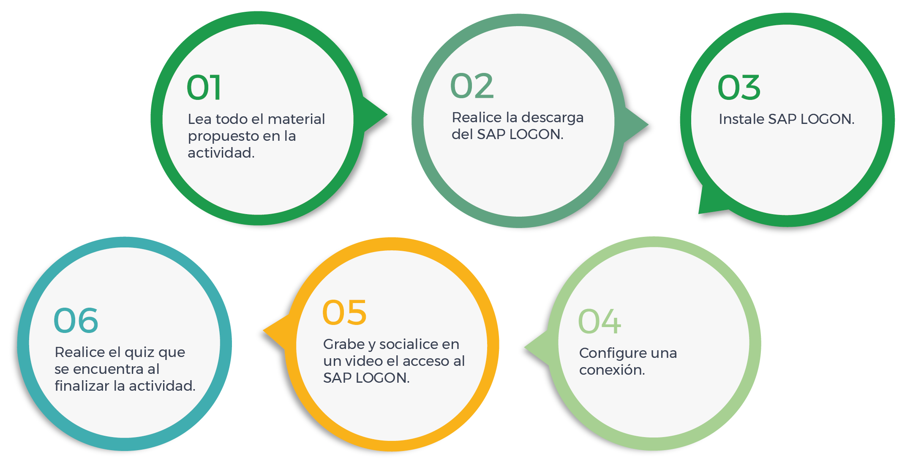

Contextualización
Objetivo: reconocer la navegación por las diferentes pantallas SAP, el acceso a los programas y herramientas mediante el uso de transacciones, y la utilización de los menús para facilitar el manejo de estas.
Modalidad: individual
Siga estas indicaciones para cumplir con el propósito de la actividad:

Duración:
2
horas